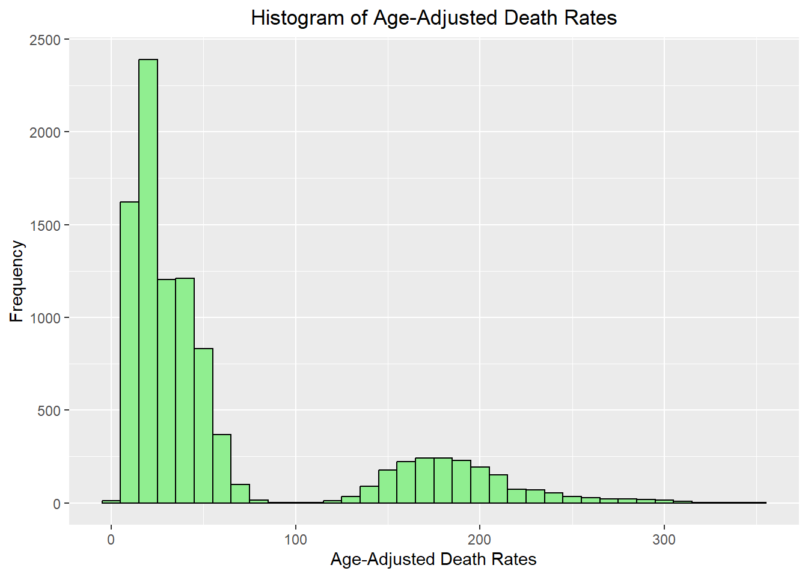
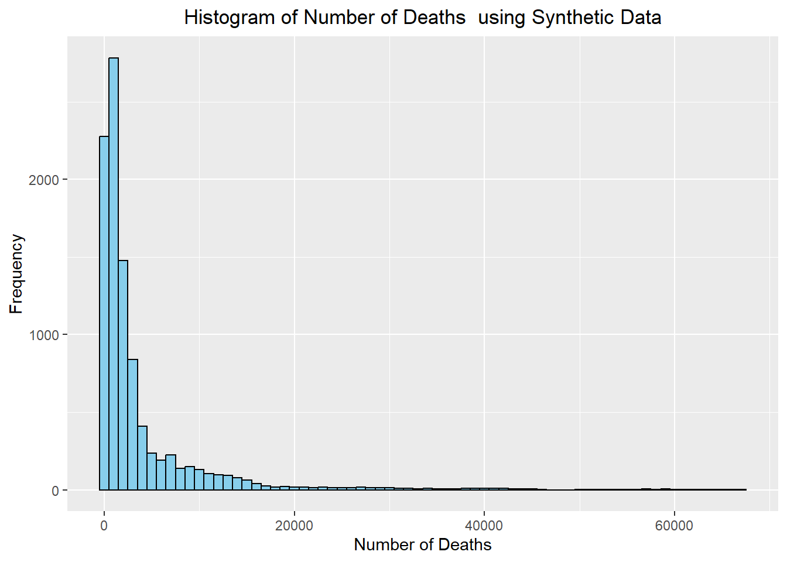
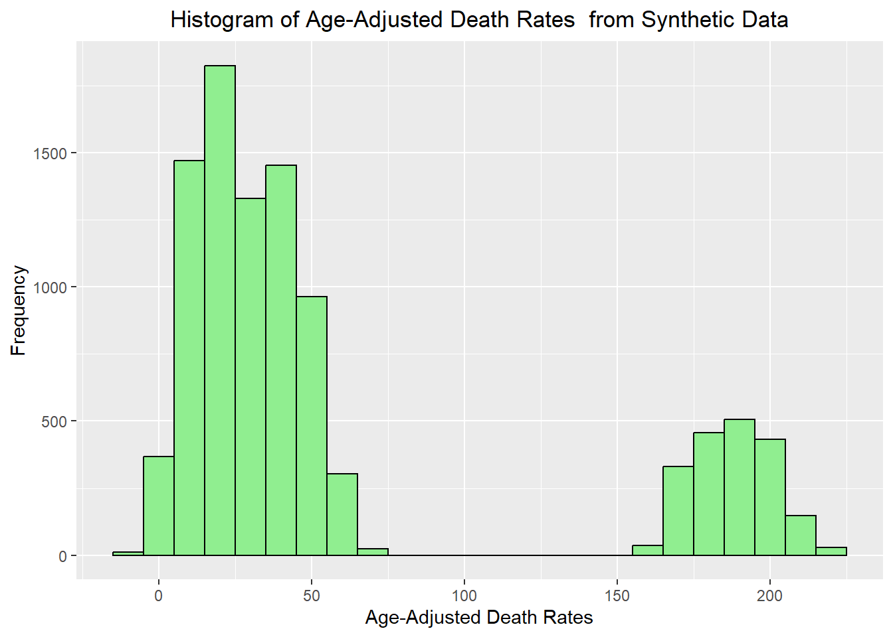

#Required packages are loaded. These packages are for data processing.cleaning, visualizing, file referencing, creating tables, etc.
library(dplyr)
library(tidyr)
library(ggplot2)
library(here)
library(skimr)
library(knitr)
library(kableExtra)
library(lme4)CDC-Data Exercise
The following data sets was provided from the National Center for Health Statistics (NCHS) and was found on the CDC’s data website. The data summarizes information regarding leading causes of death for United States’ residents. The data was collected from death certificates in the 50 states and the District of Columbia from 1999-2017. It can be found in the following link:
Loading Data Set
The data set has 6 variables and 10,686 observations. The variables include:
- Year
- X113.Cause.Name (the Cause of Death with regards to NCHS 113 Select Causes of Death)
- Cause.Name (cause of death)
- State
- Deaths (number of deaths)
- Age.adjusted.Death.Rate (Age-adjusted death rates per 100,000 population)
#Reading in the .csv file into the object "cause_of_death"
cdc_data <- read.csv(here("cdcdata-exercise", "Leading_Cause_of_Death.csv"))
#Summarizing
summary(cdc_data) Year X113.Cause.Name Cause.Name State
Min. :1999 Length:10868 Length:10868 Length:10868
1st Qu.:2003 Class :character Class :character Class :character
Median :2008 Mode :character Mode :character Mode :character
Mean :2008
3rd Qu.:2013
Max. :2017
Deaths Age.adjusted.Death.Rate
Min. : 21 Min. : 2.6
1st Qu.: 612 1st Qu.: 19.2
Median : 1718 Median : 35.9
Mean : 15460 Mean : 127.6
3rd Qu.: 5756 3rd Qu.: 151.7
Max. :2813503 Max. :1087.3 str(cdc_data)'data.frame': 10868 obs. of 6 variables:
$ Year : int 2017 2017 2017 2017 2017 2017 2017 2017 2017 2017 ...
$ X113.Cause.Name : chr "Accidents (unintentional injuries) (V01-X59,Y85-Y86)" "Accidents (unintentional injuries) (V01-X59,Y85-Y86)" "Accidents (unintentional injuries) (V01-X59,Y85-Y86)" "Accidents (unintentional injuries) (V01-X59,Y85-Y86)" ...
$ Cause.Name : chr "Unintentional injuries" "Unintentional injuries" "Unintentional injuries" "Unintentional injuries" ...
$ State : chr "United States" "Alabama" "Alaska" "Arizona" ...
$ Deaths : int 169936 2703 436 4184 1625 13840 3037 2078 608 427 ...
$ Age.adjusted.Death.Rate: num 49.4 53.8 63.7 56.2 51.8 33.2 53.6 53.2 61.9 61 ...
Note
The Age-adjusted death rates (per 100,000 population) are based the 2000 US standard population. The death rates for post 2010, uses the census required US standard population of 2010. When reviewing age-adjusted death rates, look below for more context:
Missouri Department of Health’s Definition: (Missouri Department of Health & Senior Services)
Age-Adjusted Death Rates (AADR) = \(\sum (ASDR \times \text{standard proportion})\)
Age-specific Death Rate (ASDR) = \(\frac{\text{deaths in age group}}{\text{estimated population of that age group}} \times 100,000\).
CDC’s Definition (CDC, 2022)
\(\sum_{i=1}^{n} {r_i \times (p_i / P)}{}\)
\(r_i = \text{rate in age group } i \text{ in the population of interest}\)
\(p_i = \text{standard population in age group } i\)
\(P = \sum_{i=1}^{n} \frac{p_i}{n}\)
\(n = \text{total number of age groups over the age range of the age-adjusted rate}\)
Processing and Cleaning Data Set
I first renamed the column names in the data set, as they were not too clear in what they represented. I then removed one of of the column in the data set, as it became redundant and was comparable to another column. I chose the Cause of Death column over Cause of Death_X113 column for simplicity sake, as that column also included other information not relevant and required cleaning. I then removed the rows from certain columns that did not bring any legitimate or viable information. I then used the na.omit() function to omit any rows that had any non-answered columns. As the number of observations did not change, I could deduce that there were none. I then adjusted the years column into year ranges and made them continuous for greater ease of use.
# Renaming the columns for clarity and using str() to determine if the change of name took.
names(cdc_data) <- c("Year", "Cause of Death_X113", "Cause of Death", "State", "Number of Deaths", "Age-Adjusted Death Rates")
str(cdc_data)'data.frame': 10868 obs. of 6 variables:
$ Year : int 2017 2017 2017 2017 2017 2017 2017 2017 2017 2017 ...
$ Cause of Death_X113 : chr "Accidents (unintentional injuries) (V01-X59,Y85-Y86)" "Accidents (unintentional injuries) (V01-X59,Y85-Y86)" "Accidents (unintentional injuries) (V01-X59,Y85-Y86)" "Accidents (unintentional injuries) (V01-X59,Y85-Y86)" ...
$ Cause of Death : chr "Unintentional injuries" "Unintentional injuries" "Unintentional injuries" "Unintentional injuries" ...
$ State : chr "United States" "Alabama" "Alaska" "Arizona" ...
$ Number of Deaths : int 169936 2703 436 4184 1625 13840 3037 2078 608 427 ...
$ Age-Adjusted Death Rates: num 49.4 53.8 63.7 56.2 51.8 33.2 53.6 53.2 61.9 61 ...#I removed the column `Cause of Death_X113` for simplicity sake, as it seemed redundant with the next column, which did not contain the cause of death codes.
cdc_data <- cdc_data %>%
select(-`Cause of Death_X113`)
#I removed any rows with columns in the "State" column that answered "United States"
cdc_data <- cdc_data %>%
filter(State != "United States")
#I removed any rows with columns in the "Cause of Death" column that answered "All Causes"
cdc_data <- cdc_data %>%
filter(`Cause of Death`!= "All causes")
#I used the na.omit() function to ensure the data set did not have any data that was NA
cdc_data <- na.omit(cdc_data)
#With the column Years, I arranged them into ranges, so I may have an easier time performing any analysis later on with more distinct categorical levels
breaks <- c(1999, 2000, 2003, 2006, 2009, 2012, 2015, 2018)
labels <- c("1999", "2000-2002", "2003-2005", "2006-2008", "2009-2011", "2012-2014", "2015-2017")
cdc_data$Year_Range <- cut(cdc_data$Year, breaks = breaks, labels = labels, include.lowest = TRUE)Creating the distinct ranges for the years were performed with ChatGPT 3.5. After cleaning the data, I was left with 9690 observation of 6 variables.
Descriptive Analysis of Processed Data
Categorical Variables
Using the summary(cdc_data$Year==) command, I was able to discern that each year collected 572 observations. I double checked this by entering the same command in the console to ensure that each year had the same number of observations. I used the table() function to determine the number of categories in the Cause of Death column. From this I was able to determine that there was 9 possible answer choices for that column, and each cause of death had the same number of observation in this data set. I then decided to calculate the proportion each of the answers make for each categorical variable.
#Determining the summary of each year category
summary(cdc_data$Year==1999) Mode FALSE TRUE
logical 9180 510 #Tabulating the categorical variables to discern the frequency of the output. I applied to result of the table() function an object for each categorical variable. I then used pop.table() function to determine the proportion of each answer and printed it. I discovered the prop.table() function for ChatGPT 3.5.
cause_of_death_table <- table(cdc_data$`Cause of Death`)
cause_of_death_percentages <- prop.table(cause_of_death_table)*100
print(cause_of_death_percentages)
Alzheimer's disease Cancer CLRD
10 10 10
Diabetes Heart disease Influenza and pneumonia
10 10 10
Kidney disease Stroke Suicide
10 10 10
Unintentional injuries
10 state_table <- table(cdc_data$State)
state_percentages <- prop.table(state_table)*100
print(state_percentages)
Alabama Alaska Arizona
1.960784 1.960784 1.960784
Arkansas California Colorado
1.960784 1.960784 1.960784
Connecticut Delaware District of Columbia
1.960784 1.960784 1.960784
Florida Georgia Hawaii
1.960784 1.960784 1.960784
Idaho Illinois Indiana
1.960784 1.960784 1.960784
Iowa Kansas Kentucky
1.960784 1.960784 1.960784
Louisiana Maine Maryland
1.960784 1.960784 1.960784
Massachusetts Michigan Minnesota
1.960784 1.960784 1.960784
Mississippi Missouri Montana
1.960784 1.960784 1.960784
Nebraska Nevada New Hampshire
1.960784 1.960784 1.960784
New Jersey New Mexico New York
1.960784 1.960784 1.960784
North Carolina North Dakota Ohio
1.960784 1.960784 1.960784
Oklahoma Oregon Pennsylvania
1.960784 1.960784 1.960784
Rhode Island South Carolina South Dakota
1.960784 1.960784 1.960784
Tennessee Texas Utah
1.960784 1.960784 1.960784
Vermont Virginia Washington
1.960784 1.960784 1.960784
West Virginia Wisconsin Wyoming
1.960784 1.960784 1.960784 year_table <- table(cdc_data$Year)
year_percentages <- prop.table(year_table)*100
print(year_percentages)
1999 2000 2001 2002 2003 2004 2005 2006
5.263158 5.263158 5.263158 5.263158 5.263158 5.263158 5.263158 5.263158
2007 2008 2009 2010 2011 2012 2013 2014
5.263158 5.263158 5.263158 5.263158 5.263158 5.263158 5.263158 5.263158
2015 2016 2017
5.263158 5.263158 5.263158 From the answers above, I was able to determine that all of the categorical variables in this data set have the same percentage for each category in a variable.
Continuous Variables
I then plotted the continuous variables: Number of Deaths and Age-Adjusted Death Rates to determine its distribution. The summary statistics of the variables were shown in the object summary_table. I then printed the table with the knitr package and the kableEXTRA package. The latter package was discovered when attempting to adjust the visual of the table when using ChatGPT 3.5.
#Plotted the continuous variables
ggplot(cdc_data, aes(x = `Number of Deaths`)) +
geom_histogram(binwidth = 1000, fill = "skyblue", color = "black") +
ggtitle('Histogram of Number of Deaths') +
xlab('Number of Deaths') +
ylab('Frequency') +
theme(plot.title = element_text(hjust = 0.5))
ggplot(cdc_data, aes(x = `Age-Adjusted Death Rates`)) +
geom_histogram(binwidth = 10, fill = "lightgreen", color = "black") +
ggtitle('Histogram of Age-Adjusted Death Rates') +
xlab('Age-Adjusted Death Rates') +
ylab('Frequency') +
theme(plot.title = element_text(hjust = 0.5))
#I then created the objects to store the two continuous variables
summary_variable1 <- summary(cdc_data$`Number of Deaths`)
summary_variable2 <- summary(cdc_data$`Age-Adjusted Death Rates`)
#I then created a table with the summary statistics of both variables
summary_table <- data.frame(
Variable = c("Number of Deaths", "Age-Adjusted Death Rates"),
Min = c(summary_variable1["Min."], summary_variable2["Min."]),
Q1 = c(summary_variable1["1st Qu."], summary_variable2["1st Qu."]),
Median = c(summary_variable1["Median"], summary_variable2["Median"]),
Mean = c(summary_variable1["Mean"], summary_variable2["Mean"]),
StDev = c(sd(summary_variable1), sd(summary_variable2)),
Q3 = c(summary_variable1["3rd Qu."], summary_variable2["3rd Qu."]),
Max = c(summary_variable1["Max."], summary_variable2["Max."])
)
#Printing the table with the summary statistics of the two variables
kable(summary_table,
caption = "Summary statistics of Number of Deaths and Age-Adjusted Death Rates") %>%
kable_styling(full_width = TRUE)| Variable | Min | Q1 | Median | Mean | StDev | Q3 | Max |
|---|---|---|---|---|---|---|---|
| Number of Deaths | 21.0 | 536.0 | 1413.00 | 3744.12621 | 28670.502 | 3257.75 | 71930.0 |
| Age-Adjusted Death Rates | 2.6 | 18.3 | 31.45 | 60.47208 | 129.967 | 55.00 | 347.4 |
Conclusion and Discussion
The data set that was provided by the CDC was fairly clean and did not require much cleaning or processing. When attempting to analyze the individual variables, it became apparent that the categorical variables had a more uniform distribution, with an equal number of observations per category. The continuous variables when plotted showed a more exponential distribution, with many of it’s observations being in the lower end of its range.
When reviewing the statistics of the continuous variables, it become apparent how great the variation is in each variable, The column “Number of Deaths” has a mean of 3744.12621 and a high standard deviation of 28670.502. The column “Age-Adjusted Death Rates” has a mean of 60.47208 and a standard deviation of 129.967. With such a high standard deviation, it is suggested that both variables have a greater spread of data
References
Missouri Department of Health and Senior Services. (n.d.). Age-adjusted rates. Retrieved from https://health.mo.gov/data/mica/CDP_MICA/AARate.html
Centers for Disease Control and Prevention. (August 12, 2022). Age adjustment. Retrieved from https://www.cdc.gov/nchs/hus/sources-definitions/age-adjustment.htm
This section is contributed by Malika Dhakhwa
The original data includes 10 causes of death. There are 19 years of data for each of the causes of death for 51 states from 1999 to 2017. I simulated the categorical variables, Year, State and Cause of Death using these parameters. Combining these, I created a data frame ‘synthetic_data’ which has 9690 observations.
#Generating a column of 19 years starting from 1999 to 2017. ChatGPT helped me to find out the expand.grid function.
Year <- 1999:2017
#Generating 51 states assuming generic state names
states <- paste("State", 1:51)
#Generating Cause of Death
causes_of_death <- c("Alzheimer's disease", "Cancer", "CLRD", "Diabetes", "Heart disease",
"Influenza and pneumonia", "Kidney disease", "Stroke", "Suicide", "Unintentional injuries")
synthetic_data <- expand.grid(Year = Year, State = states, Cause_of_Death = causes_of_death)
str(synthetic_data)'data.frame': 9690 obs. of 3 variables:
$ Year : int 1999 2000 2001 2002 2003 2004 2005 2006 2007 2008 ...
$ State : Factor w/ 51 levels "State 1","State 2",..: 1 1 1 1 1 1 1 1 1 1 ...
$ Cause_of_Death: Factor w/ 10 levels "Alzheimer's disease",..: 1 1 1 1 1 1 1 1 1 1 ...
- attr(*, "out.attrs")=List of 2
..$ dim : Named int [1:3] 19 51 10
.. ..- attr(*, "names")= chr [1:3] "Year" "State" "Cause_of_Death"
..$ dimnames:List of 3
.. ..$ Year : chr [1:19] "Year=1999" "Year=2000" "Year=2001" "Year=2002" ...
.. ..$ State : chr [1:51] "State=State 1" "State=State 2" "State=State 3" "State=State 4" ...
.. ..$ Cause_of_Death: chr [1:10] "Cause_of_Death=Alzheimer's disease" "Cause_of_Death=Cancer" "Cause_of_Death=CLRD" "Cause_of_Death=Diabetes" ...I replaced the generic state with actual state names. ChatGPT helped me with the mapping.
# Mapping of placeholder names to actual state names
state_mapping <- setNames(c("Alabama", "Alaska", "Arizona", "Arkansas", "California", "Colorado",
"Connecticut", "Delaware", "District of Columbia", "Florida", "Georgia",
"Hawaii", "Idaho", "Illinois", "Indiana", "Iowa", "Kansas", "Kentucky",
"Louisiana", "Maine", "Maryland", "Massachusetts", "Michigan", "Minnesota",
"Mississippi", "Missouri", "Montana", "Nebraska", "Nevada", "New Hampshire",
"New Jersey", "New Mexico", "New York", "North Carolina", "North Dakota",
"Ohio", "Oklahoma", "Oregon", "Pennsylvania", "Rhode Island", "South Carolina",
"South Dakota", "Tennessee", "Texas", "Utah", "Vermont", "Virginia",
"Washington", "West Virginia", "Wisconsin", "Wyoming"),
paste("State", 1:51))
# Replacing the placeholder names in synthetic_data with actual state names using the mapping
synthetic_data$State <- state_mapping[synthetic_data$State]
# Checking for accuracy
head(synthetic_data$State)[1] "Alabama" "Alabama" "Alabama" "Alabama" "Alabama" "Alabama"str(synthetic_data)'data.frame': 9690 obs. of 3 variables:
$ Year : int 1999 2000 2001 2002 2003 2004 2005 2006 2007 2008 ...
$ State : chr "Alabama" "Alabama" "Alabama" "Alabama" ...
$ Cause_of_Death: Factor w/ 10 levels "Alzheimer's disease",..: 1 1 1 1 1 1 1 1 1 1 ...
- attr(*, "out.attrs")=List of 2
..$ dim : Named int [1:3] 19 51 10
.. ..- attr(*, "names")= chr [1:3] "Year" "State" "Cause_of_Death"
..$ dimnames:List of 3
.. ..$ Year : chr [1:19] "Year=1999" "Year=2000" "Year=2001" "Year=2002" ...
.. ..$ State : chr [1:51] "State=State 1" "State=State 2" "State=State 3" "State=State 4" ...
.. ..$ Cause_of_Death: chr [1:10] "Cause_of_Death=Alzheimer's disease" "Cause_of_Death=Cancer" "Cause_of_Death=CLRD" "Cause_of_Death=Diabetes" ...summary(synthetic_data) Year State Cause_of_Death
Min. :1999 Length:9690 Alzheimer's disease : 969
1st Qu.:2003 Class :character Cancer : 969
Median :2008 Mode :character CLRD : 969
Mean :2008 Diabetes : 969
3rd Qu.:2013 Heart disease : 969
Max. :2017 Influenza and pneumonia: 969
(Other) :3876 For simulating ‘No. of deaths’ and ‘Age-adjusted death rates’ in the synthetic data, I use the estimates of Year, state and Cause of death on the log of ‘No. of deaths’ and ‘Age-adjusted death rates’ obtained from the original data. To do this, I first fitted linear models using the original data.
#Renaming the columns of the original data temporarily for fitting the model to avoid the spaces and simplifying the syntax.
names(cdc_data)[names(cdc_data) == "Number of Deaths"] <- "Number_of_Deaths"
names(cdc_data)[names(cdc_data) == "Cause of Death"] <- "Cause_of_Death"
names(cdc_data)[names(cdc_data) == "Age-Adjusted Death Rates"] <- "AADR"
#Fitting the linear model for log of 'Number of Deaths'
lm_log_Deaths <- lm(log(Number_of_Deaths) ~ Year + factor(State) + factor(Cause_of_Death), data = cdc_data)
lm_log_Deaths
Call:
lm(formula = log(Number_of_Deaths) ~ Year + factor(State) + factor(Cause_of_Death),
data = cdc_data)
Coefficients:
(Intercept)
-15.499892
Year
0.011346
factor(State)Alaska
-2.631253
factor(State)Arizona
0.003643
factor(State)Arkansas
-0.457314
factor(State)California
1.620484
factor(State)Colorado
-0.379651
factor(State)Connecticut
-0.565903
factor(State)Delaware
-1.891678
factor(State)District of Columbia
-2.497995
factor(State)Florida
1.236063
factor(State)Georgia
0.376874
factor(State)Hawaii
-1.649134
factor(State)Idaho
-1.416394
factor(State)Illinois
0.747390
factor(State)Indiana
0.202046
factor(State)Iowa
-0.550949
factor(State)Kansas
-0.609990
factor(State)Kentucky
-0.085395
factor(State)Louisiana
-0.109299
factor(State)Maine
-1.293221
factor(State)Maryland
-0.191319
factor(State)Massachusetts
0.061227
factor(State)Michigan
0.595212
factor(State)Minnesota
-0.214052
factor(State)Mississippi
-0.478931
factor(State)Missouri
0.190847
factor(State)Montana
-1.654428
factor(State)Nebraska
-1.144469
factor(State)Nevada
-0.923959
factor(State)New Hampshire
-1.527223
factor(State)New Jersey
0.294695
factor(State)New Mexico
-1.063613
factor(State)New York
0.990054
factor(State)North Carolina
0.521378
factor(State)North Dakota
-2.019163
factor(State)Ohio
0.818885
factor(State)Oklahoma
-0.248317
factor(State)Oregon
-0.415952
factor(State)Pennsylvania
0.947478
factor(State)Rhode Island
-1.675424
factor(State)South Carolina
-0.152719
factor(State)South Dakota
-1.840267
factor(State)Tennessee
0.238119
factor(State)Texas
1.249413
factor(State)Utah
-1.146016
factor(State)Vermont
-2.247963
factor(State)Virginia
0.221954
factor(State)Washington
0.016514
factor(State)West Virginia
-0.781371
factor(State)Wisconsin
0.017620
factor(State)Wyoming
-2.325557
factor(Cause_of_Death)Cancer
2.017137
factor(Cause_of_Death)CLRD
0.600338
factor(Cause_of_Death)Diabetes
-0.034050
factor(Cause_of_Death)Heart disease
2.101562
factor(Cause_of_Death)Influenza and pneumonia
-0.304687
factor(Cause_of_Death)Kidney disease
-0.588815
factor(Cause_of_Death)Stroke
0.625631
factor(Cause_of_Death)Suicide
-0.666365
factor(Cause_of_Death)Unintentional injuries
0.535392 #Fitting the linear model for 'Age-Adjusted Death Rates'
lm_AADR <- lm(AADR ~ Year + factor(State) + factor(Cause_of_Death), data = cdc_data)
lm_AADR
Call:
lm(formula = AADR ~ Year + factor(State) + factor(Cause_of_Death),
data = cdc_data)
Coefficients:
(Intercept)
1882.7197
Year
-0.9192
factor(State)Alaska
-14.7132
factor(State)Arizona
-16.9621
factor(State)Arkansas
-1.0926
factor(State)California
-17.7700
factor(State)Colorado
-19.4279
factor(State)Connecticut
-20.4679
factor(State)Delaware
-11.9584
factor(State)District of Columbia
-9.8437
factor(State)Florida
-17.4747
factor(State)Georgia
-8.0547
factor(State)Hawaii
-25.7053
factor(State)Idaho
-14.9195
factor(State)Illinois
-12.5142
factor(State)Indiana
-6.7821
factor(State)Iowa
-14.4537
factor(State)Kansas
-12.7321
factor(State)Kentucky
0.9379
factor(State)Louisiana
-0.8732
factor(State)Maine
-12.4874
factor(State)Maryland
-15.1758
factor(State)Massachusetts
-19.2879
factor(State)Michigan
-8.9100
factor(State)Minnesota
-22.2426
factor(State)Mississippi
4.2426
factor(State)Missouri
-5.8016
factor(State)Montana
-13.5532
factor(State)Nebraska
-16.5868
factor(State)Nevada
-8.8389
factor(State)New Hampshire
-15.5737
factor(State)New Jersey
-16.7442
factor(State)New Mexico
-14.9495
factor(State)New York
-17.0289
factor(State)North Carolina
-9.3574
factor(State)North Dakota
-16.4347
factor(State)Ohio
-7.3579
factor(State)Oklahoma
0.9063
factor(State)Oregon
-16.0874
factor(State)Pennsylvania
-11.1116
factor(State)Rhode Island
-15.7116
factor(State)South Carolina
-6.5289
factor(State)South Dakota
-13.9963
factor(State)Tennessee
-1.3111
factor(State)Texas
-11.8305
factor(State)Utah
-20.7479
factor(State)Vermont
-15.5589
factor(State)Virginia
-13.6826
factor(State)Washington
-15.7000
factor(State)West Virginia
0.8032
factor(State)Wisconsin
-14.9347
factor(State)Wyoming
-11.5605
factor(Cause_of_Death)Cancer
153.5837
factor(Cause_of_Death)CLRD
19.6052
factor(Cause_of_Death)Diabetes
-1.6291
factor(Cause_of_Death)Heart disease
172.9024
factor(Cause_of_Death)Influenza and pneumonia
-6.8265
factor(Cause_of_Death)Kidney disease
-10.9622
factor(Cause_of_Death)Stroke
20.8678
factor(Cause_of_Death)Suicide
-11.5956
factor(Cause_of_Death)Unintentional injuries
18.4553 I used the above coefficients to calculate the predicted log of ‘Number of Deaths’ for each observation in the synthetic data and then exponentiate predicted values to get the original Number of Deaths. I followed similar steps for the Age-adjusted Death Rate. ChatGPT helped me with finding the ‘predict’ function to do this.
# Calculating the predicted values of log of deaths for the synthetic data
predicted_log_deaths <- predict(lm_log_Deaths, newdata = synthetic_data, type = "response")
# Converting log of 'Number of Deaths' back to the original scale and adding the column to the synthetic data
synthetic_data$Number_of_Deaths <- round(exp(predicted_log_deaths))
# Calculating the predicted values of Age-adjusted death rates in the column
predicted_AADR <- predict(lm_AADR, newdata = synthetic_data, type = "response")
# Adding the predicted Age-adjusted death rates to the synthetic data
synthetic_data$Age_adjusted_Death_Rate <- round(predicted_AADR)Following my collaborator, I created a table of summary statistics to compare the distributions in the original data and the synthetic data.
#Creating the objects to store the two continuous variables
summary_variable1 <- summary(synthetic_data$Number_of_Deaths)
summary_variable2 <- summary(synthetic_data$Age_adjusted_Death_Rate)
#I then created a table with the summary statistics of both variables
summary_table <- data.frame(
Variable = c("Number_of_Deaths", "Age_adjusted_Death_Rate"),
Min = c(summary_variable1["Min."], summary_variable2["Min."]),
Q1 = c(summary_variable1["1st Qu."], summary_variable2["1st Qu."]),
Median = c(summary_variable1["Median"], summary_variable2["Median"]),
Mean = c(summary_variable1["Mean"], summary_variable2["Mean"]),
StDev = c(sd(summary_variable1), sd(summary_variable2)),
Q3 = c(summary_variable1["3rd Qu."], summary_variable2["3rd Qu."]),
Max = c(summary_variable1["Max."], summary_variable2["Max."])
)
#Printing the table with the summary statistics of the two variables
kable(summary_table,
caption = "Summary statistics of Synthetic Data") %>%
kable_styling(full_width = TRUE)| Variable | Min | Q1 | Median | Mean | StDev | Q3 | Max |
|---|---|---|---|---|---|---|---|
| Number_of_Deaths | 49 | 538 | 1397 | 3646.45573 | 26508.08390 | 3349.75 | 66629 |
| Age_adjusted_Death_Rate | -9 | 18 | 34 | 60.47245 | 81.77695 | 53.00 | 222 |
The distribution of Number of Deaths and Age-adjusted Death Rates in the synthetic data are closely aligned with the original CDC data with the exception of the minimum values. The Age-adjusted Death Rates resulted a negative number (-9) for the minimum which is not meaningful. Upon a detailed review, I found that 0.59% (57) of the total observations have negative values for the Age-adjusted Death Rate, highlighting a need for correction to ensure the meaningfulness of these observations. Several strategies, including imputation and treating these as missing values, offer viable solutions.
#Checking counts of negative values
synthetic_data$Age_adjusted_Death_Rate[synthetic_data$Age_adjusted_Death_Rate < 0] [1] -1 -2 -3 -4 -1 -2 -1 -2 -3 -1 -2 -2 -3 -4 -5 -6 -7 -8 -1 -2 -1 -2 -3 -4 -5
[26] -1 -2 -3 -1 -1 -1 -2 -1 -2 -2 -3 -1 -2 -3 -4 -5 -6 -7 -8 -9 -1 -2 -1 -1 -2
[51] -3 -4 -5 -1 -2 -3 -4The histogram of the ‘Number of Deaths’ on the synthetic data resembles with that of the original data.The Age-adjusted Death Rates have lesser variability in the synthetic data.
#Plotted the continuous variables
ggplot(synthetic_data, aes(x = `Number_of_Deaths`)) +
geom_histogram(binwidth = 1000, fill = "skyblue", color = "black") +
ggtitle('Histogram of Number of Deaths using Synthetic Data') +
xlab('Number of Deaths') +
ylab('Frequency') +
theme(plot.title = element_text(hjust = 0.5))
ggplot(synthetic_data, aes(x = `Age_adjusted_Death_Rate`)) +
geom_histogram(binwidth = 10, fill = "lightgreen", color = "black") +
ggtitle('Histogram of Age-Adjusted Death Rates from Synthetic Data') +
xlab('Age-Adjusted Death Rates') +
ylab('Frequency') +
theme(plot.title = element_text(hjust = 0.5))
Following my collaborator’s work, I summarized and tabulated the categorical variables to check frequency. As expected, the results are similar to the original data.
#Determining the summary of each year category
summary(synthetic_data$Year==1999) Mode FALSE TRUE
logical 9180 510 #Tabulating the categorical variables for frequency of the output following Kelly's method.
cause_of_death_table <- table(synthetic_data$Cause_of_Death )
cause_of_death_percentages <- prop.table(cause_of_death_table)*100
print(cause_of_death_percentages)
Alzheimer's disease Cancer CLRD
10 10 10
Diabetes Heart disease Influenza and pneumonia
10 10 10
Kidney disease Stroke Suicide
10 10 10
Unintentional injuries
10 state_table <- table(synthetic_data$State)
state_percentages <- prop.table(state_table)*100
print(state_percentages)
Alabama Alaska Arizona
1.960784 1.960784 1.960784
Arkansas California Colorado
1.960784 1.960784 1.960784
Connecticut Delaware District of Columbia
1.960784 1.960784 1.960784
Florida Georgia Hawaii
1.960784 1.960784 1.960784
Idaho Illinois Indiana
1.960784 1.960784 1.960784
Iowa Kansas Kentucky
1.960784 1.960784 1.960784
Louisiana Maine Maryland
1.960784 1.960784 1.960784
Massachusetts Michigan Minnesota
1.960784 1.960784 1.960784
Mississippi Missouri Montana
1.960784 1.960784 1.960784
Nebraska Nevada New Hampshire
1.960784 1.960784 1.960784
New Jersey New Mexico New York
1.960784 1.960784 1.960784
North Carolina North Dakota Ohio
1.960784 1.960784 1.960784
Oklahoma Oregon Pennsylvania
1.960784 1.960784 1.960784
Rhode Island South Carolina South Dakota
1.960784 1.960784 1.960784
Tennessee Texas Utah
1.960784 1.960784 1.960784
Vermont Virginia Washington
1.960784 1.960784 1.960784
West Virginia Wisconsin Wyoming
1.960784 1.960784 1.960784 year_table <- table(synthetic_data$Year)
year_percentages <- prop.table(year_table)*100
print(year_percentages)
1999 2000 2001 2002 2003 2004 2005 2006
5.263158 5.263158 5.263158 5.263158 5.263158 5.263158 5.263158 5.263158
2007 2008 2009 2010 2011 2012 2013 2014
5.263158 5.263158 5.263158 5.263158 5.263158 5.263158 5.263158 5.263158
2015 2016 2017
5.263158 5.263158 5.263158